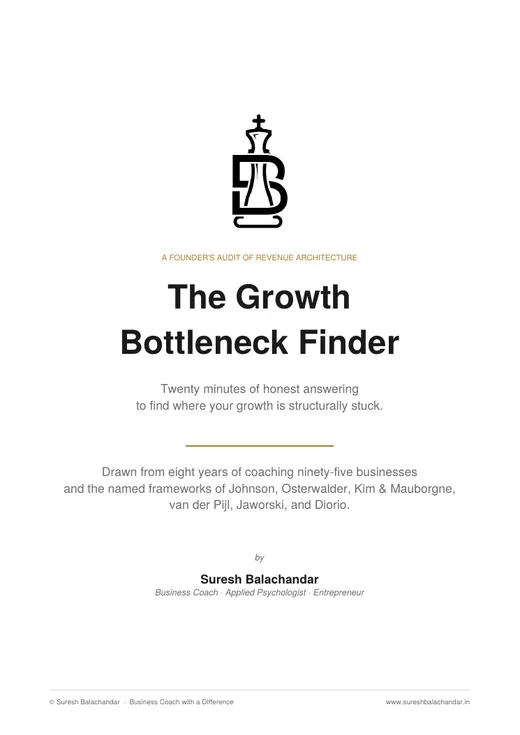

02 · The entry diagnostic · ₹3,000
RAAG
Revenue Architecture Audit and Guidance
RAAG tells you how strong your business is, measured through the one thing that cannot lie, which is your revenue. It takes 2 hours and it gives you one score, one constraint and one move.
Apply for a RAAG diagnostic Take the free guide first
The first measurement is free. 20 minutes with The Growth Bottleneck Finder shows you where your revenue is actually stopping, before you spend a rupee on me. Take it now.
- 2 hoursone to one, on your figures
- 7 numbersbefore we meet, no software
- 1 dayto the written verdict
- ₹3,000the whole of it
01 Take this before you pay me anything
The first measurement is free.
RAAG is the paid instrument. This is the free one that comes before it. The Growth Bottleneck Finder scores your business across the 3 engines and shows you where the revenue and the profit are actually stopping. If what it shows you is enough, keep it, act on it, and we are done. If you want the full measurement, that is what RAAG is.

20 minutesFree download
The Growth Bottleneck Finder
20 minutes of honest answering to find where your growth is structurally stuck. An audit of your revenue architecture, done by you, before you pay anybody.
02 Why this exists
You know what your business earns. Do you know whether it holds?
Every founder can tell you his turnover. Very few can tell you what happened in his 3 worst months, or how many months last year the business failed to cover its own costs, or which rupees arrived because of something he did rather than something that happened to him.
Those are different questions, and they are the ones that decide whether a business survives a bad year. RAAG answers them in 2 hours.
Most founders judge their business by how much it earns. RAAG judges it by whether that earning holds. Whether it arrives steadily, continues on its own, and rests on more than one leg.
03 The ladder
Your revenue has an architecture. Most founders have never looked at it.
Revenue architecture is the way your money arrives, holds, and rests. It is measured on a 4 rung ladder. A business standing on all 4 rungs is strong. A business standing only on the first is weak, however large its turnover. The audit climbs the ladder rung by rung until a rung fails, and where it stops is the diagnosis. Most founders stop at rung 1, and that is not a failure of the instrument. It is where the work is.
What the 4 rungs are, and the readings that score each one, are the instrument itself. I do not publish the instrument. You meet it in the room, with your own figures on the table, which is where it is worth something.
04 How it works
It runs in 3 parts, which are before, during, and the day after.
- 01Before we meetYou fill in one page of 7 lines. It asks for 12 months of revenue, your fixed monthly cost, and a few figures you already know. It needs no software and no accountant, and it takes about 20 minutes.
- 02The 2 hoursWe meet on Zoom, on Google Meet, or in my room in Chennai. I do not present to you. We sit with your figures and discover the architecture together. Before I show you any number, you write down what you think it is, and the gap between your guess and your figures is the most useful thing you will take home. You leave holding a one page summary filled in pen in front of you.
- 03The next dayThe written verdict arrives. It carries your score, the single constraint, the one move, and the 4 numbers that show what this business must earn, what it earned, what it has already proved, and what it could deliver with what you already own.
05 What you get
You get one score, one constraint and one move.
- 01The first is the RAAG Score, which says how strong this business is when it is measured through its revenue. You get a score out of 10, and you learn where you stand on the 4 rung ladder.
- 02The second is one constraint. You do not get a list of 11 things to fix, you get the one that is holding the rest down.
- 03One move, small enough to start this week and free to do.
- 04The third is 3 documents, and they are the page you filled in during the session, the one page summary, and the written verdict.
How the verdict reads
Your RAAG Score is 6 out of 10, at rung 1.
Below a passing score, the verdict names the binding constraint and the one move. Score well, and I will tell you so and you will not be sold anything. It happens, and a founder who earns that sentence gets it said plainly.
06 What it is not
Said before you pay rather than after.
- 01It is not a sales meeting with a diagnostic attached. Nothing is sold in the 2 hours.
- 02It is not an audit, and I do not need your books. I need 7 numbers you can stand behind.
- 03It is not advice about your industry. It is arithmetic about your business, read against the thresholds for your own trade, because a distributor and a design firm with identical revenue are not comparable.
- 04There is no file on you that you have not seen. My notes from the session carry no score and no opinion I have not said to your face, and you may ask for them at any time.
07 Asked, and answered
The questions founders ask before they pay.
- 01I already know my numbers.Good. Then this will take 2 hours and confirm it, and you will have a written verdict for ₹3,000. Most founders who say that are right about turnover and wrong about their worst quarter. That is the whole point of writing your guess down first.
- 02₹3,000 is very cheap. What is the catch?It is the entry to a ladder. If the diagnosis is useful, you may want the work that fixes it, and that is not ₹3,000. If it is not useful, you have lost 2 hours and the price of a dinner. That trade is deliberately in your favour.
- 03Can you just do it from my P&L?No, and there is a specific reason. Part of the measurement can only be taken by talking to you, and a P&L cannot answer it. Your figures are half the instrument. You are the other half.
- 04My business is seasonal. Or project based. Or unusual.Then it is read against its own trade, and the thresholds differ by sector. If your revenue is seasonal, we check whether the shortfall repeats in the same months, and the reading is adjusted for it. A season you can plan for is not the same as a shortfall that moves around.
08 The price, and the reason for it
It costs ₹3,000, which is deliberately low, because it is the front door.
The price is low because RAAG is the front door to the work that follows, and I would rather every founder walk through it than only the ones who can afford to gamble.
It is also the front door. The long engagements begin with this measurement, whatever a founder is ready to spend, because a coach who has not measured your business is guessing, and I would rather not guess with your money. SPRINT is the one exception. Its first sessions carry their own diagnosis, so a founder who already knows his bottleneck can start there directly. Nobody skips the measurement. Some take it inside SPRINT.
→ Where this leads
The report is the salesman. Nothing is sold in the room.
If the verdict names a constraint that can be removed, the report says what removing it involves, and you decide whether you want that conversation. Usually it is one of these 2.